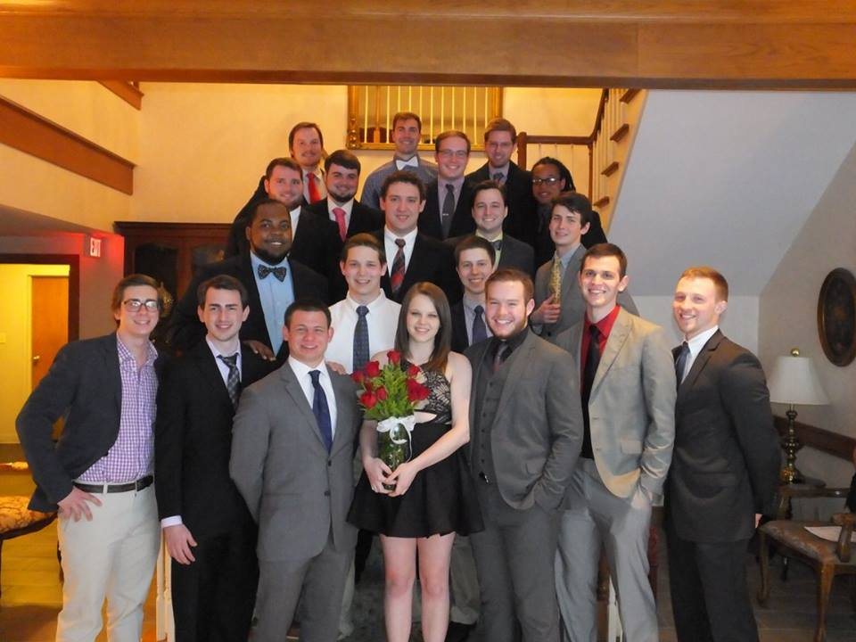

Prior to coming to Louisville, I lived in Hawesville, a small rural town in western Kentucky, but I am currently a senior at the University of Louisville pursuing a Bachelor's degree in Computer Information Systems. As of now, I am scheduled to receive my degree in December of 2016. I currently work as an IT Intern at SWH Supply Company, a local HVAC parts wholesaler, in Louisville, KY. I am also a member of the Iota-Omicron of Sigma Pi Fraternity on the University of Louisville's campus.

I try my best to stay connected socially through sites like Facebook, Twitter, and Instagram, as well as professionally through sites like LinkedIn and GitHub. Let's connect.
This site was developed using the following libraries and tools: